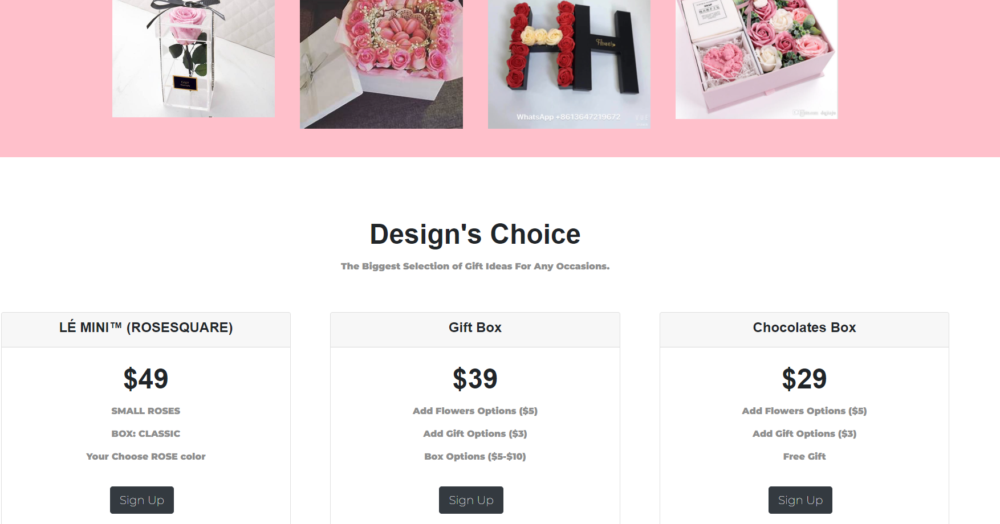
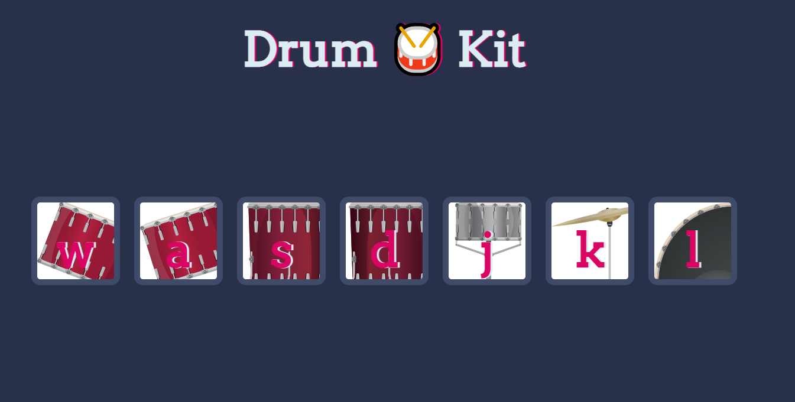
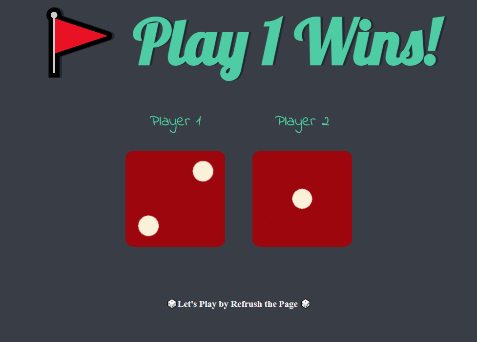
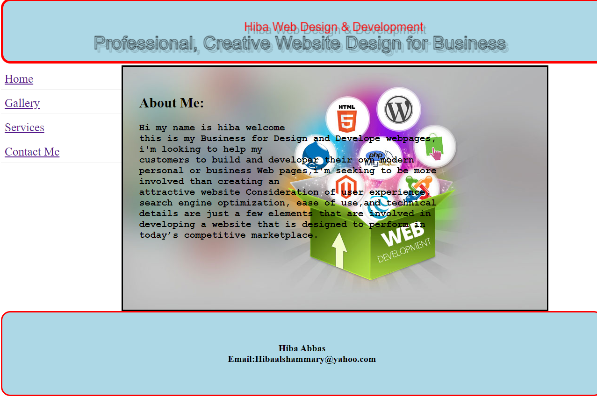

Hiba Abbas
Application Analyst | Business Systems | Enterprise Applications | OnBase | SQL | Automation Systems
Technology and Business Systems professional with an MS in Computer Science and 5+ years of experience supporting enterprise applications,
workflows, data, and business processes.
Experienced with Hyland OnBase, SQL Server, Excel, Power BI, application support, troubleshooting, testing, data validation,
and process improvement. I have supported business users, investigated system and data issues, and configured and tested enterprise workflows and forms.
I’m expanding my skills in SAP ERP, Salesforce, AWS, and industrial automation concepts including PLC, SCADA, DCS, and MES.
Interested in Application/Business Systems, Enterprise Application Support, Systems Automation, and entry-level Automation Engineer opportunities.
Featured Projects
Build a Business Catalog Website with location map, simple Games and Resume using different languages.

Create and maintain company website by building a business catalog using HTML, CSS, JavaScript, PHP.
NEI Website
Create Website Using Bootstrap
Successfully design business catalog website using Bootstrap Library using ( HTML,CSS, JAVASCRIPT, Node, React, MongoDB),The project covered the principle for the design, development and deployment of a website.
Website Using Bootstrap
Create Play with Drum Webpage using JAVASCRIPT
Design play with drum website using ( HTML,CSS, JAVASCRIPT), The project covered the principle for the design adding some images with sound.
PlayWithDrum
Create Play with Dice Game
Design a Dice Game website using ( HTML,CSS, JAVASCRIPT) by Refreshing the webpage, this project covered JAVASCRIPT mathematical power.
PlaywithDice
Business Catalog - Student prject
Developed a client-side web technology using JavaScript & jQuer, Learn the concepts of Server-side programming using PHP.
My First ProjectWork Experience
See my complete work history and full responsibilities for each jobs on: Hiba Resume
IT Processor Developer I
NEI Benefits Plan, Newtown square, PA
May 2022 – July 2026
Key contributions:
• Supported business-critical enterprise applications and operational tools; investigated issues, performed root-cause analysis, and coordinated timely resolutions. • Used SQL Server and Excel to extract, analyze, validate, and reconcile business data and investigate discrepancies. • Translated stakeholder requirements into OnBase workflow automation, forms, system enhancements, and process improvements. • Configured, tested, and supported Hyland OnBase Workflow, Life Cycles, Unity Forms, E-Forms, and related components. • Developed and maintained SQL queries and database processes for troubleshooting, reporting, validation, and integrations. • Coordinated testing, release validation, deployment support, and migrations across Development, Test, and Production environments. • Created SOPs, technical documentation, user guides, and training materials; collaborated with users, vendors, project managers, and technical teams.
Network Operations Specialist II
NEI Benefits Plan, Newtown square, PA
May 2021 – May 2022
Key contributions:
• Supported internal business applications, operational databases, infrastructure, document imaging systems, and end users. • Investigated technical and operational issues, documented resolutions, and coordinated support across technology functions. • Assisted with business continuity, system upgrades, and operational technology improvements.
Data Entry Specialist & Assistant
Chester Country Intermediate Unit, West Chester, PA
Aug 2018 – May 2021
Key contributions:
• Maintained accurate records, databases, reports, and organizational documentation while supporting data-intensive administrative workflows. • Supported staff with technology-related tasks, instructional materials, presentations, and live demonstrations.
School Volunteer
CCIU, Downingtown, PA
Aug 2014 – Aug 2018
Key contributions:
Providing instruction and managing classroom environments in absence of the regular teacher. Prepare power point presentations for teachers. Manage the technology in classes.
Manger Assistant and Support System Engineer
Force10UAE, Abu Dhabi, United Arab Emirates
Apr 2007 - Aug 2013
Key contributions:
• Supported management in an international environment, coordinating communications, schedules, travel, meetings, records, vendors, and customer inquiries.
Support Technician
Ministry of Electricity, Baghdad, Iraq
Aug 2006 – Aug 2008
Key contributions:
Install and configure new hardware. Diagnose and solve desktop problems. Create/manage technical support tickets. Provide support to junior desktop support technicians. Tier II IT customer support.
Data Entry
Al-Warka Bank, Baghdad, Iraq
Sep 2005 – Aug 2006
Key contributions:
Enter, maintain, and organize bank documentation. Maintain agenda and calendar for management team. Verifying data accuracy and sorting information for data porting.
Education
M.Sc. Computer Science
{kind=link}
West Chester University of Pennsylvania, West Chester, PA
GPA: 3.66
Graduated Spring 2022
Full-Stack Web Developer CERTIF
Udemy Web Development Courses
July 2020
B.Sc. Computer Science
University of Baghdad, Baghdad, Iraq
GPA:2.9
Graduation Aug 2005
PMP® 6th Edition
REP Approved 20 Contact Hours certification